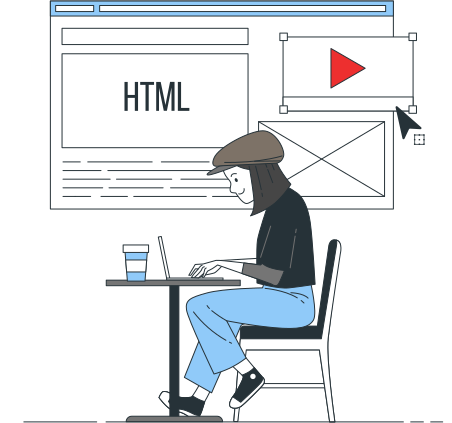
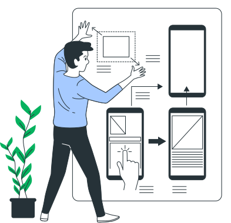
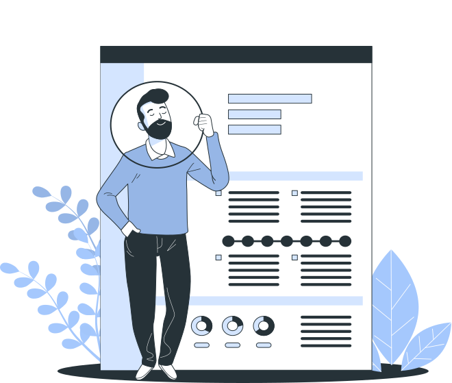
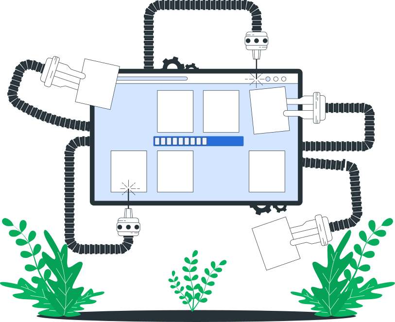

<!DOCTYPE html><html lang="ru"><head><meta charset="UTF-8"><meta http-equiv="X-UA-Compatible" content="IE=edge"><meta name="viewport" content="width=device-width, initial-scale=1.0"><link rel="stylesheet" href="css/style.min.css"><title>Технологии создания сайта, которые использует Дмитрий Коченов</title></head></html><body id="tehnologies"><header class="header"><div class="header__wrap container"> <div class="header__logo"><a href="#">Дмитрий Коченов  </a></div><nav class="header__menu"> <ul class="header__menu-items"><li class="header__menu-item"> <a class="header__menu-link" href="#">Услуги </a></li><li class="header__menu-item"> <a class="header__menu-link" href="tehnologies.html">Технологии </a></li><li class="header__menu-item"> <a class="header__menu-link" href="#">Продукция</a></li><li class="header__menu-item"> <a class="header__menu-link" href="#">Портфолио</a></li><li class="header__menu-item"> <a class="header__menu-link" href="#">Блог</a></li><li class="header__menu-item"> <a class="header__menu-link" href="#">О себе</a></li></ul></nav><div class="header__button"><a class="btn-border" href="#">Контакты</a></div></div></header><div class="breadcrumbs"><div class="container"><ul class="breadcrumbs__items"><li class="breadcrumbs__item"> <a class="breadcrumbs__link" href="/">Главная</a></li><li class="breadcrumbs__item"> Технологии</li></ul></div></div><main class="page"><div class="container"><h1 class="page__title">Технологии, которые я использую при создании сайтов </h1><div class="page__item"><h2 class="page__subtitle">HTML и CSS основа создания веб страниц</h2><div class="page__item-wrap"><div class="page__item-img"></div><div class="page__item-content"><p class="page__text"> Абсолютно все страницы в интернете построены при помощи HTML и CSS. В своих работах я использую последние версии HTML5 и CSS3.</p><p class="page__text">К сожаленю не все браузеры поддерживают новые функции каскадных таблиц стилей и гипертекстовой разметки страниц, поэтому очень важно соблюдать определённые правила разработки сайтов, что бы конечный продукт выглядел одинаково во всех современных браузерах. Такой подход называется кросбраузерной вёрсткой.</p><p class="page__text">Для быстрой вёрстки сайтов я использую дополнительные инструменты, о которых подробнее напишу чуть ниже. Дополнительные инструменты позволяют ускорить вёрстку сайта в несколько раз и генерировать на выходе кросбраузерный и валидный код.</p><p class="page__text">После вёрски сайта из макета у заказчика на руках готовый сайт, который состоит из набора файлов HTML и CSS, в дальнейшем такой сайт можно интегрировать в любую CMS.</p></div></div></div><div class="page__item"><h2 class="page__subtitle">Javascript&nbsp;&mdash; сайт будет интерактивным.</h2><div class="page__item-wrap"><div class="page__item-img"></div><div class="page__item-content"><p class="page__text">JavaScript это язык программирования, который работает на стороне клиента, то есть в браузере при загрузке страницы. При помощи JS сайт начинает быть интерактивным. Не смотря на то, что в современном CSS3 встроенны множество интерактивных функций, таких как, например,  анимация, при помощи которых можно делать интерактив, JS не утратил своей актуальности, а наоборот обновил свой программный потенциал. </p><p class="page__text">Javascript может работать с любым элементом страницы, изменять его свойства и стили, перемещать или скрывать, анимировать их. В своих работах я стараюсь обходится максимально без использования этого языка программирования, но некоторые интерактивные элементы сайта не обходятся без его использования. Слайдер сайта проще всего сделать при помощи Javascript, карусель товаров, выпадающие списки, модальные окна и многое другое.  </p><p class="page__text">Если в макете дизайнер указал, каким образом нужно сделать элемент интерактивным, то безусловно я это делаю. Но если интерактив на макете есть, но дизайнер не указал как это должно работать, то лучше у него уточнить перед заказом, что бы точно знать как он задумал работу этого элемента сайта.</p></div></div></div><div class="page__item"><h2 class="page__subtitle">Вёрстка сайта по&nbsp;макету FIGMA</h2><div class="page__item-wrap"><div class="page__item-img"></div><div class="page__item-content"><p class="page__text">Figma является инструментом дизайнера, в этой программе рисуется макет будущего сайта или приложения. Макет определяет всю визуальную часть сайта. Уже по готовому макету верстальщик создаёт веб сайт, делая его идентичным макету.   </p><p class="page__text">Существуют различные программы для создания макетов, но основных и популярхыс всего несколько, в основном это Фотошоп, Скетч и Фигма. Лично я предпочитаю верстать сайты из макетов созданных в Figma, сейчас практически все дизайнеры его активно используют. </p><h3 class="page__title-3">Где взять макет в&nbsp;FIGMA?</h3><p class="page__text">Существую как бесплатные макеты, так и платные. Но лучше всего, когда макеты создаются под заказ профессиональным дизайнером под ваш проект.Заказать такую разработку можно на фриланс биржах.</p><p class="page__text">Бесплатные макеты Фигма можно скачать на сайтах, которые легко найти при помощи поисковых систем. Платные макеты в основном найти можно на зарубежных сайтах. Если есть трудности в поиске таких макетов, можете напиать мне личное сообщение в вконтакте и я пришлю вам ссылки на такие сайты.</p><h3 class="page__title-3">Что делать с макетом FIGMA?</h3><p class="page__text">Сам макет представляет собой набор картинок и текста, и самостоятельно без внаний в вёрстке не получится сделать сайт. Советую всё-таки обратится к профессиональному верстальщику, который сделает из макета готовый сайт. Многие современные верстальщики имеют навыки внедрения сайта в CMS. </p></div></div></div><div class="page__item"><h2 class="page__subtitle">SASS&nbsp;&mdash; препроцессор CSS</h2><div class="page__item-wrap"><div class="page__item-img"></div><div class="page__item-content"><p class="page__text">Что делает препроцессор SASS? Все препроцессоры CSS делают одно и тоже, генерируют CSS код. В самом SASS свой собственный синтаксис написания кода, который можно использовать повторно, добавлять переменные, функции и циклы. Например, в любом сайте есть блоки которые повторяются на всех страницах и что бы постоянно не копировать их на новую страницу мы используем его повторно. А если нужно изменить блок, то мы меняет его только в одном месте а не на всех страницах. </p><p class="page__text">Так же препроцессор добавляет в CSS префиксы для правильной работы дайта в разных браузерах, и не нужно задумываться о этом факторе во время разработки. Но всё рабно после нужно проверять кроссбраузерность сайта.</p><p class="page__text">Какой плюс имеет заказчит от того, что я в вёрстке использую препроцессор? Ну как минимум есть 2 плюса, это скорость работы и чистый код на выходе. Так же увеличивается скорость поддержки сайта даже другим разработчиком.</p></div></div></div></div></main><section class="action"><div class="action__wrap"><div class="container"> <div class="action__content-wrap"><h2 class="white action__title">Сделай заказ уже сейчас</h2><p class="white action__description">Интересны мои услуги? Обязательно посмотрите портфолио и ознакомьтесь более подробно с описанием услуг. Посмотрите моё рассписание и выбирите удобное время собеседования.</p><p class="white action__description">На собеседовании мы договаримся по срокам разработки, способам оплаты и уточним все детали, которые волнуют Вас. Есть различные варианты собеседования, мне главное точно знать что хочет заказчик. Если Вы умеете составлять ТЕХНИЧЕСКОЕ ЗАДАНИЕ, то мне будет проще понять, что вы в итоге хотите.</p><div class="action__btn-wrap"><a class="btn-border">Контакты</a><a class="btn-border">Расписание</a><a class="btn">Подробнее</a></div></div></div></div></section><section class="features"><div class="container"> <h2 class="section__title">Чем я лучше других?</h2><div class="features__wrap"> <ul class="features__items"><li class="features__item features__item-1"><p class="features__text">Сотрудничаю с веб дизайнерами и sео специалистами.</p></li><li class="features__item features__item-2"><p class="features__text">Адекватные цены на весь спектр услуг и готовую продукцию. </p></li><li class="features__item features__item-3"> <p class="features__text"> Оплата только за результат и нет ни каких финансовых рисков. Аванс не нужен.</p></li><li class="features__item features__item-4"> <p class="features__text">Сопровождение работ в течении 3-х месяцев после передачи проекта заказчику.</p></li></ul></div></div></section><footer class="page-footer"><div class="page-footer__wrap"><div class="container page-footer__flex-wrap"><div class="page-footer__column"><div class="page-footer__logo"> <a href="#">Коченов Дмитрий</a></div><ul class="page-footer__social-items"><li class="page-footer__social-item"> <a href="#"><svg aria-hidden="true" focusable="false" data-icon="vk" role="img" xmlns="http://www.w3.org/2000/svg" viewBox="0 0 576 512"><path d="M545 117.7c3.7-12.5 0-21.7-17.8-21.7h-58.9c-15 0-21.9 7.9-25.6 16.7 0 0-30 73.1-72.4 120.5-13.7 13.7-20 18.1-27.5 18.1-3.7 0-9.4-4.4-9.4-16.9V117.7c0-15-4.2-21.7-16.6-21.7h-92.6c-9.4 0-15 7-15 13.5 0 14.2 21.2 17.5 23.4 57.5v86.8c0 19-3.4 22.5-10.9 22.5-20 0-68.6-73.4-97.4-157.4-5.8-16.3-11.5-22.9-26.6-22.9H38.8c-16.8 0-20.2 7.9-20.2 16.7 0 15.6 20 93.1 93.1 195.5C160.4 378.1 229 416 291.4 416c37.5 0 42.1-8.4 42.1-22.9 0-66.8-3.4-73.1 15.4-73.1 8.7 0 23.7 4.4 58.7 38.1 40 40 46.6 57.9 69 57.9h58.9c16.8 0 25.3-8.4 20.4-25-11.2-34.9-86.9-106.7-90.3-111.5-8.7-11.2-6.2-16.2 0-26.2.1-.1 72-101.3 79.4-135.6z"></path></svg></a></li><li class="page-footer__social-item"> <a href="#"><svg aria-hidden="true" height="45" focusable="false" data-icon="twitter" role="img" xmlns="http://www.w3.org/2000/svg" viewBox="0 0 512 512"><path d="M459.37 151.716c.325 4.548.325 9.097.325 13.645 0 138.72-105.583 298.558-298.558 298.558-59.452 0-114.68-17.219-161.137-47.106 8.447.974 16.568 1.299 25.34 1.299 49.055 0 94.213-16.568 130.274-44.832-46.132-.975-84.792-31.188-98.112-72.772 6.498.974 12.995 1.624 19.818 1.624 9.421 0 18.843-1.3 27.614-3.573-48.081-9.747-84.143-51.98-84.143-102.985v-1.299c13.969 7.797 30.214 12.67 47.431 13.319-28.264-18.843-46.781-51.005-46.781-87.391 0-19.492 5.197-37.36 14.294-52.954 51.655 63.675 129.3 105.258 216.365 109.807-1.624-7.797-2.599-15.918-2.599-24.04 0-57.828 46.782-104.934 104.934-104.934 30.213 0 57.502 12.67 76.67 33.137 23.715-4.548 46.456-13.32 66.599-25.34-7.798 24.366-24.366 44.833-46.132 57.827 21.117-2.273 41.584-8.122 60.426-16.243-14.292 20.791-32.161 39.308-52.628 54.253z"></path></svg></a></li><li class="page-footer__social-item"> <a href="#"><svg aria-hidden="true" height="36" focusable="false" role="img" xmlns="http://www.w3.org/2000/svg" viewBox="0 0 320 512"><path d="M279.14 288l14.22-92.66h-88.91v-60.13c0-25.35 12.42-50.06 52.24-50.06h40.42V6.26S260.43 0 225.36 0c-73.22 0-121.08 44.38-121.08 124.72v70.62H22.89V288h81.39v224h100.17V288z"></path></svg></a></li></ul></div><div class="page-footer__column"><div class="page-footer__service"><div class="page-footer__title white">Услуги</div><ul class="page-footer__service-items">  <li class="page-footer__service-item"><a href="#">Вёрстка сайтов по макету</a></li><li class="page-footer__service-item"><a href="#">Внесение правок в готовый сайт</a></li><li class="page-footer__service-item"><a href="#">Создание адаптива на готовом сайте</a></li><li class="page-footer__service-item"><a href="#">Лендинг под ключ</a></li></ul></div></div><div class="page-footer__column"><div class="page-footer__service"><div class="page-footer__title white">Я использую</div><ul class="page-footer__service-items">  <li class="page-footer__service-item"><a href="#">Макеты Figma</a></li><li class="page-footer__service-item"><a href="#">HTML/CSS/SASS/JS</a></li><li class="page-footer__service-item"><a href="#">БЭМ</a></li><li class="page-footer__service-item"><a href="#">Адаптивная вёрстка</a></li></ul></div></div><div class="page-footer__column"><div class="page-footer__service"><div class="page-footer__title white"><a href="#"> ПРОДУКЦИЯ</a></div><div class="page-footer__title white"><a href="#">ПОРТФОЛИО</a></div><div class="page-footer__title white"> <a href="#">БЛОГ</a></div></div></div><div class="page-footer__column"><div class="page-footer__service"><div class="page-footer__title white">О СЕБЕ</div><ul class="page-footer__service-items">  <li class="page-footer__service-item"><a href="#">Контакты</a></li><li class="page-footer__service-item"><a href="#">Моя история</a></li><li class="page-footer__service-item"><a href="#">Календарь разработок</a></li><li class="page-footer__service-item"><a href="#">Сотрудничество</a></li></ul></div></div></div><div class="page-footer__botoom"><div class="container page-footer__botoom-wrap"> <div class="page-footer__botoom-copyright"> &copy; 2021 - Коченов Дмитрий. Все Права Защищены </div><div class="page-footer__botoom-privacy-policy"><a href="#">Политика конфиденциальности</a></div><div class="page-footer__botoom-cookies-policy"><a href="#">Политика использования файлов cookie</a></div></div></div></div></footer></body>